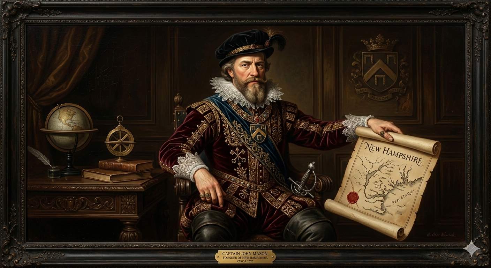
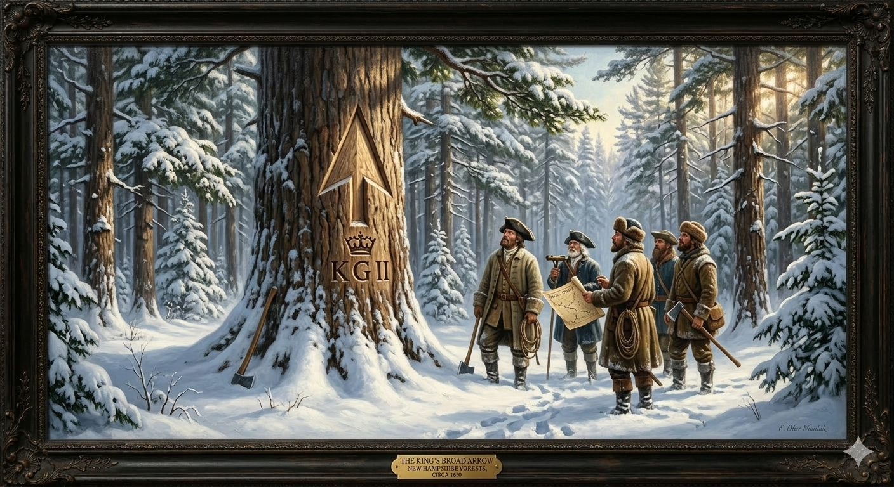

1. שנות פעילות, הקמה ויעדים
שנת הקמה: ההתיישבות הראשונה הוקמה ב-1623. השם "ניו המפשייר" הופיע לראשונה במסמך הזיכיון של שנת 1629.
ישות מקימה: "מועצת ניו אינגלנד" העניקה זיכיון לשטח הממוקם בין נהר המרימאק לנהר הפיסקאטקווה לשני יזמים בריטיים: סר פרדיננדו גורג'ס וקפטן ג'ון מייסון.
היעדים המקוריים: בניגוד לרוב מושבות ניו אינגלנד, ניו המפשייר לא הוקמה מתוך רדיפה דתית או אידאולוגיה אוטופית. היא הוקמה מסיבות מסחריות טהורות. המטרה הייתה להקים כפרים רווחיים שיפיקו הון מתעשיית הדיג העשירה של צפון האוקיינוס האטלנטי, ומסחר בפרוות ובסחר עצים מול האינדיאנים.
2. רקע המייסד: קפטן ג'ון מייסון

קפטן ג'ון מייסון (John Mason) (1586–1635)
רקע: מלח, מגלה ארצות ויזם אנגלי. לפני שקיבל את הזיכיון לניו המפשייר, הוא שימש כמושל החלקה הבריטית בניופאונדלנד (קנדה), שם למד את הפוטנציאל הכלכלי העצום של חופי צפון אמריקה.
הישגים ופרדוקס אישי: מייסון חילק את הזיכיון של ניו אינגלנד עם שותפו סר פרדיננדו גורג'ס. גורג'ס לקח את החצי המזרחי (מיין), ומייסון לקח את החצי המערבי (ניו המפשייר). מייסון השקיע הון עצום מכיסו הפרטי בשליחת מתיישבים וציוד. למרבה האירוניה, הוא מת ב-1635 באנגליה מבלי שכף רגלו דרכה אי פעם באדמת ניו המפשייר. מותו המוקדם הותיר את המושבה ללא הנהגה, מה שפתח את הדלת להשתלטות מסצ'וסטס.
3. אידאולוגיה: פרגמטיזם אנטי-פוריטני
ניו המפשייר הייתה החריגה בנוף האידאולוגי הנוקשה של "ניו אינגלנד".
- דת שנייה לפרנסה: המתיישבים הראשונים היו בעיקר אנגליקנים או אנשים שהדת עניינה אותם פחות מפרנסה. הם באו "לתפוס דגים ולחטוב עצים", לא לנהל ויכוחים תיאולוגיים.
- חוסר משמעת: בניגוד לשכניהם במסצ'וסטס, לתושבי ניו המפשייר הייתה אידאולוגיה של עצמאות גסה. הם סירבו להכפיף את זכות ההצבעה שלהם לחברות בכנסייה, וניהלו את עיירותיהם כמרכזים פרגמטיים.
4. גיאוגרפיה והידרולוגיה: נהר הפיסקאטקווה
הגיאוגרפיה של ניו המפשייר התאפיינה בחוף קצר אך אסטרטגי, ועורף הררי מכוסה יערות עד.
- נהר הפיסקאטקווה (Piscataqua River): נהר מהיר, עמוק, בעל זרמי גאות ושפל חזקים מאוד. זרמים אלו מנעו מנמל פורטסמות' לקפוא לחלוטין גם בחורפים הקרים, מה שהפך אותו למיקום מושלם למספנות הפועלות לאורך כל השנה.
- אדמה סלעית: האדמה הייתה מסולעת ודקה בשל קרחונים קדומים, מה שמנע פיתוח של חקלאות רחבת היקף והכריח את המתיישבים לחפש רווחים במשאבים טבעיים אחרים.
5. כלכלה: דגים ותרנים לצי המלכותי

כלכלת ניו המפשייר התבססה על ניצול משאבי הטבע של הים והיער:
- תעשיית הדיג: המנוע הכלכלי הראשון. ייצוא דגי בקלה (Cod) מומלחים לאירופה ולאיי הודו המערבית.
- עצי האורן וסמל "החץ הרחב" (Broad Arrow): עצי האורן הלבן המזרחי היו המשאב המבוקש ביותר בעולם לבניית תרנים (Masts) לספינות. הצי המלכותי הבריטי היה תלוי בהם לחלוטין. הכתר חוקק חוקים ששמרו את כל העצים הגדולים כרכוש המלך, ופקחים סימנו אותם בגרזן בצורת "חץ רחב". מתיישבי ניו המפשייר, שרצו לכרות את העצים לרווחתם, מרדו בחוקים אלו והבריחו עצים.
6. דמוגרפיה: המושבה הדלילה
ניו המפשייר הייתה המושבה הקטנה והפחות מאוכלסת מבין מושבות ניו אינגלנד לאורך כל המאה ה-17:
- אוכלוסיית גברים עובדים: החברה הורכבה בעיקר מדייגים, חוטבי עצים וסוחרי פרוות – גברים קשוחים שחיו בעיירות ספר, בניגוד בולט למשפחות הפוריטניות של מסצ'וסטס.
- צמיחה איטית: ההתקפות הבלתי פוסקות מצד שבטי האינדיאנים שלחמו לצד הצרפתים מנעו מהמושבה להתפשט הרחק מקו החוף עד למאה ה-18.
7. מאבקי השליטה: הבלעה על ידי מסצ'וסטס והשחרור
היסטוריית השליטה של ניו המפשייר היא מאבק מתמיד כנגד האימפריאליזם הדתי של שכנתה מדרום:
מסיפוח לעצמאות כמושבת כתר
- מועדי ההשתלטות: סופחה למסצ'וסטס ב-1641. הופרדה כמושבת כתר עצמאית ב-1679. לבסוף הפכה עצמאית לחלוטין ב-1691.
- אישים בולטים: המלך צ'ארלס השני, ורוברט טופטון מייסון (נכדו של המייסד, שתבע את הקרקע בבית המשפט באנגליה).
- סיבת ההשתלטות (והשחרור): לאחר מותו של המייסד ב-1635, מסצ'וסטס ניצלה את הוואקום המנהיגותי, פירשה מחדש את הגבולות, וב-1641 סיפחה את היישובים לתוכה. המהפך הגיע בשנות ה-70 של המאה ה-17. נכדו של המייסד תבע את זכויותיו באנגליה. במקביל, המלך צ'ארלס השני זעם על מסצ'וסטס הסוררת, ובעיקר - רצה לשלוט ישירות בסחר בתרני העצים לטובת הצי המלכותי שלו. לכן, בשנת 1679, חתך המלך את המושבה מידיה של מסצ'וסטס והפך אותה למושבת כתר אנגלית עצמאית (Royal Province).
8. מחקר אטימולוגי: Hampshire ומקורות המילה
Hamp- (האמפ-)
מקור: אנגלית עתיקה
המקור למילה הוא Hamtun באנגלית עתיקה, והוא מתחלק לשני שורשים:
1. Ham - משמעותו אחוזה, בית או כפר (זהו המקור למילה המודרנית Home).
2. Tun - משמעותו מתחם מגודר או עיירה (זהו המקור למילה המודרנית Town).
הצירוף מתייחס לעיר ולנמל החשוב "סאות'המפטון" (Southampton) שבאנגליה.
-shire (שייר)
מקור: אנגלית עתיקהנגזר מהמילה Scir. משמעותו היא "מחוז" (County) - נחלה או אזור שליטה המנוהל על ידי פקיד רשמי של הכתר (השריף, שנקרא במקור Shire-reeve).
New Hampshire (ניו המפשייר)
הלחם השם המלא שניתן בזיכיון משנת 1629. משמעותו היא: "מחוז המפשייר החדש".
קפטן ג'ון מייסון בחר את השם עבור הזיכיון שלו באמריקה כאות כבוד למחוז מולדתו ולמקום מגוריו – מחוז המפשייר (Hampshire) באנגליה. במחוז זה ממוקמת עיר הנמל המפורסמת פורטסמות' (Portsmouth) – וזו הסיבה שהעיר המרכזית בניו המפשייר האמריקאית נקראה אף היא באותו השם.